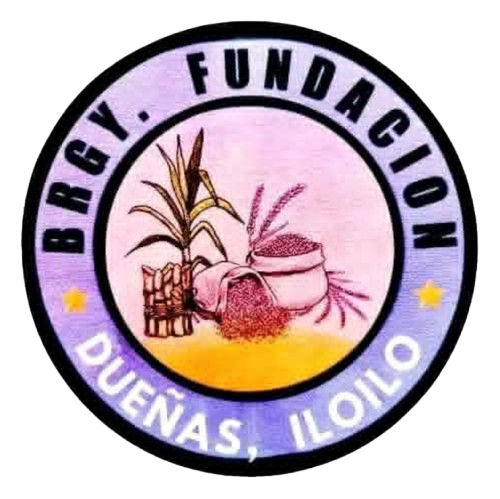

Official Information Portal | Dueñas, Iloilo
Barangay Fundacion was established in 1985. It started as a small farming community and gradually developed into a growing residential area. Through strong leadership and cooperation among residents, the barangay continues to improve its facilities and services.
To become a safe, organized, and progressive barangay that promotes unity, transparency, and sustainable development.
To provide quality public service, maintain peace and order, promote community participation, and implement programs that improve the quality of life of residents.